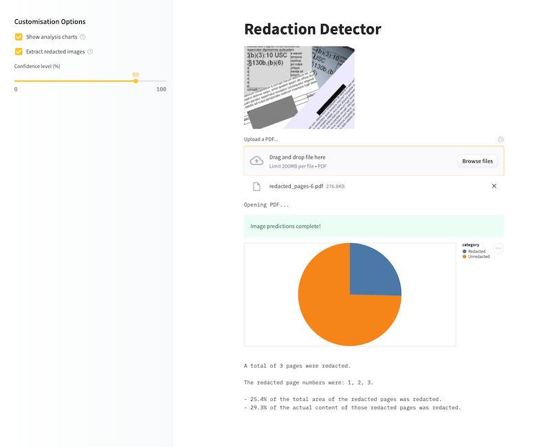

üö¶ Motivation
After the second class of the fastai course, we’re encouraged to create mini-projects that result in models we can deploy online. Deployment is a huge field with its own complexities, of course, but having an option to get something out in the world that’s visible and usable is extremely useful.
In this post, I will walk you through how I built a super quick MVP of my redacted document detector project. I used:
fastaito classify and extract redacted pages extracted from PDFsicevision(@ai_fast_track) to detect the redacted areas- HuggingFace Spaces (with Gradio and Streamlit) to deploy my MVP
The post shows how I went about thinking through the task, showcasing some examples of small prototypes I built along the way, including the final stage where I built: - an app including everything that would be needed by a final ‘deployed’ use case of my model - two models working in tandem in the same app (one classification, one object detection) - optional PDF generation of items detected by the model (!)
I also explore why you might want to have a minimal deployed version of your application in the first place!
üêæ Step by step, iteration by iteration
This week I chose to use my previous work on redacted images to leverage a dataset I’d previously collected. I wanted to showcase something useful and interesting and I ended up slightly blocked as to what I was going to build. After discussing it with the study group briefly, I was reminded not to try to bite off too much: start small with the smallest possible next version of what you want, and then continue from there.
Since I already had a large dataset of redacted and unredacted images (extracted from PDF documents available online), I used this to train a classification model that could tell whether a page contained redactions or not.
With that model exported, it was then easy to get a simple Gradio app demo up and running, particularly with the suggestions in Tanishq Abraham’s really useful tutorial blogpost.
It’s an easy step to go from having a Gradio app deployed to then hosting that same demo as a Huggingface Space, so I then did that. You can access the demo here at strickvl/fastai_redaction_classifier.
At this first stage I had the exported model itself uploaded inside the Spaces repository, but this useful blog by Omar Espejel showed how I could just upload my model directly to the Huggingface model hub. Instead of calling learn.export('model.pkl') and uploading the model file itself, I could just run the following code after authentication:
from huggingface_hub import push_to_hub_fastai
repo_id = "MY_USERNAME/MY_LEARNER_NAME"
push_to_hub_fastai(learner=learn, repo_id=repo_id)My model lives here on the Huggingface model hub and can be directly saved or just used via the hosted Inference API.
⚡️ Using the inference API for more flexibility
Buoyed on by Tanishq’s blog and the workflow we’d seen in the lecture that week, I thought it might be worth running my inference requests through the HTTP API instead of letting Huggingface handle all that.
Thanks to a really simple and comprehensible example made by @Nuvic I was quickly able to get something up and running. The forked source code is available here and the main website where you can try out the tool is here: https://strickvl.github.io/predict_redaction_classification/.
If you search for ‘redacted document’ images and save one of them do your local computer you can use those to try it out. It uses simple Javascript code to pass the image you upload into the inference API using a simple HTTP request. It parses the results and displays them as shown here:
While the demo gives a sense of the model’s capabilities, in reality you would probably not find it very helpful to use a web app that required you to feed a document’s pages to it one by one. I started to think about a more complex application where you could upload a PDF and it would split the PDF for you and do all the inference behind the scenes.
üöÄ Building an MVP of a redaction detection application
I spent a brief half-hour considering deploying a simple Flask web app hosted somewhere for free before realising I didn’t even need to go that far to create a proof of concept that would have the required functionality. I returned back to Huggingface Spaces hoping that I’d be able to build everything out.
You can access the demo / MVP app that I created here: https://huggingface.co/spaces/strickvl/redaction-detector
This MVP app runs two models to mimic the experience of what a final deployed version of the project might look like.
- The first model (a classification model trained with fastai, available on the Huggingface Hub here and testable as a standalone demo here), classifies and determines which pages of the PDF are redacted. I’ve written about how I trained this model here.
- The second model (an object detection model trained using IceVision (itself built partly on top of fastai)) detects which parts of the image are redacted. This is a model I’ve been working on for a while and I described my process in a series of blog posts.
This MVP app does several things:
- it extracts any pages it considers to contain redactions and displays that subset as an image carousel. It also displays some text alerting you to which specific pages were redacted.
- if you click the “Analyse and extract redacted images” checkbox, it will:
- pass the pages it considered redacted through the object detection model
- calculate what proportion of the total area of the image was redacted as well as what proportion of the actual content (i.e. excluding margins etc where there is no content)
- create a PDF that you can download that contains only the redacted images, with an overlay of the redactions that it was able to identify along with the confidence score for each item.
Converting a Gradio app over to Streamlit
I was curious about the differences between the main two options enabled by Huggingface Spaces, so I then worked a little on converting my Gradio app to a Streamlit app. The process of conversion was fairly easy for the most part; the only difference is the style of programming expected by Streamlit:
- Streamlit is a less declarative style of creating your app. It runs your code from top to bottom, rendering whatever elements you specify.
- This seems to result in more verbose code (e.g. compare this with this).
There are two easy ways to deploy a Streamlit app: either host it natively on Streamlit itself, or host it on Huggingface Spaces. The advantage of hosting natively on Streamlit is that you essentially have what looks and feels like a custom website that is 100% your application. In the end, I didn’t go down this route for two reasons:
- Hosting via Huggingface Spaces keeps the connection between your demo app and your username. You can click through to view all of my demos and applications here, for example. On Streamlit there is currently no concept of a user’s portfolio. If you’re trying to showcase your work, Huggingface Spaces is the clear winner in this regard.
- Hosting on Streamlit seems to have restrictive memory constraints. I frequently ran into restrictions on the machine that was running my application and would quite often be encouraged to reboot my app, clearing its cache, and instructed to refer to docs on how to make my application more efficient. The docs were useful, but I ran into issues using the Streamlit cache (the main solution offered) because of the models I was using. Luckily, Huggingface Spaces’ backend instances seem far more generous in terms of resources. For small / trivial apps not doing much you’ll be fine with Streamlit, but for anything more involved there’s more of a decision to be made.
I didn’t convert all the various parts of my Gradio app over to work on Streamlit — in particular extraction of images and display as a carousel was non-trivial — but you can get a sense of the flexibility with this image:

(Alternatively, you can try it out over on Huggingface Spaces here.)
You can see that I was able to insert a chart to display the proportion calculations. This is much more pleasant than the pure text version. Streamlit’s documentation is pretty great and their basic ‘Get started’ tutorial should indeed be your first port of call.
ü§î Lessons learned
{% include info.html text=“In this post you learned:
1️⃣ to start with simple prototypes
2️⃣ how to easily deploy fastai models on Huggingface Spaces and the Hub and
3️⃣ that you can create functional MVP demos of real products and applications
” %}
I was — and continue to be — surprised that the free Huggingface Spaces environment has no problem running all this fairly compute-intensive inference on their backend. (That said, if you try to upload a document containing dozens or hundreds of pages and you’ll quickly hit up against the edge of what they allow.)
I became very familiar with the Gradio interface docs while creating this app and was impressed by how customisable the final application could be. You don’t have as much freedom as a web application written from scratch, but you still do have a lot of freedom.
üìê When to use Gradio
- if you have a simple use case that you want to highlight
- if your inputs and outputs are clearly defined
- if you have a single model to showcase
- if you want to get something quickly deployed
üåä When to use Streamlit
- if your use case is more interactive or less simple than just basic input-then-output
- if you want more control on how your demo application is displayed
- if you enjoy a more imperative style of programming
Given how much inference is going on behind the scenes, I’m surprised that these applications run as fast as it does. For a document with 4 or 5 redacted pages, it takes around 10 seconds to do all the steps described above. 10 seconds is still far too long for a scenario where you wanted to run inference over millions of pages, but in that scenario you wouldn’t be manually uploading them on a web app either.
It’s extremely gratifying to have these kinds of tools available to use for free, and really exciting that you get to build out prototypes of this kind after just two weeks of study on the fastai course.